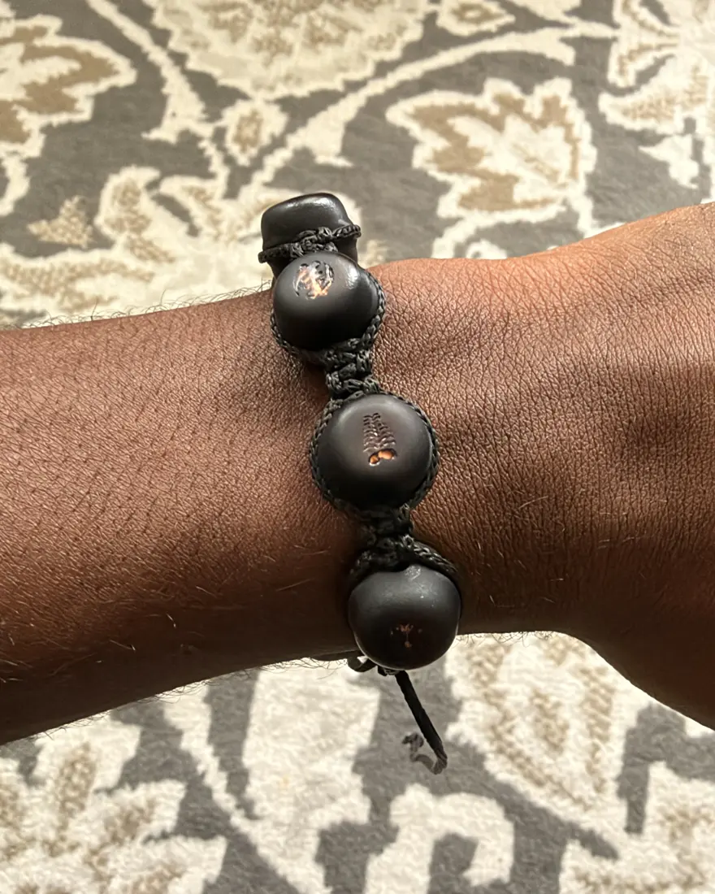
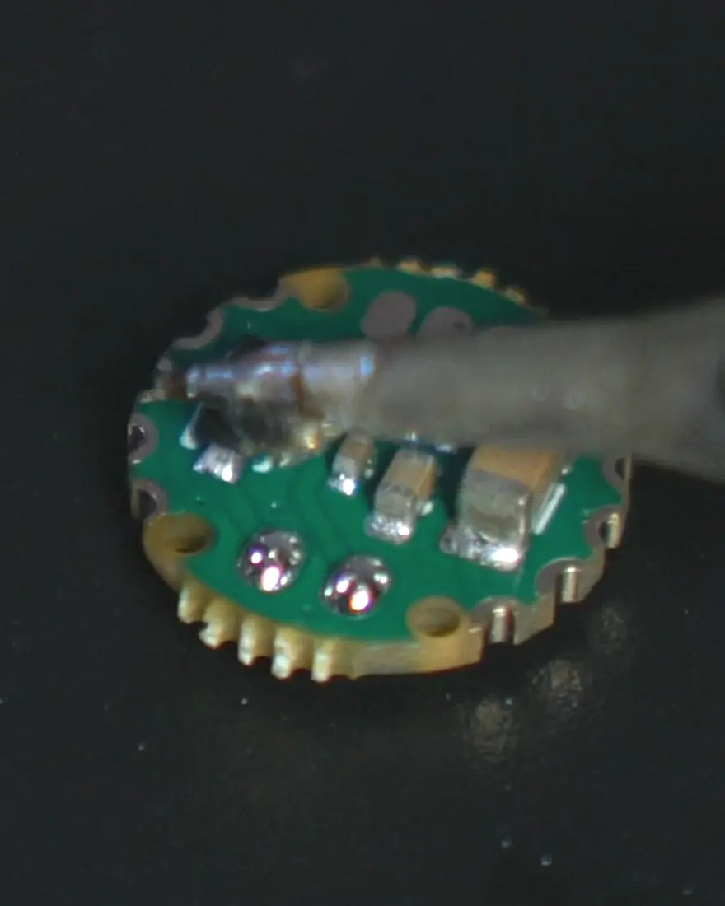
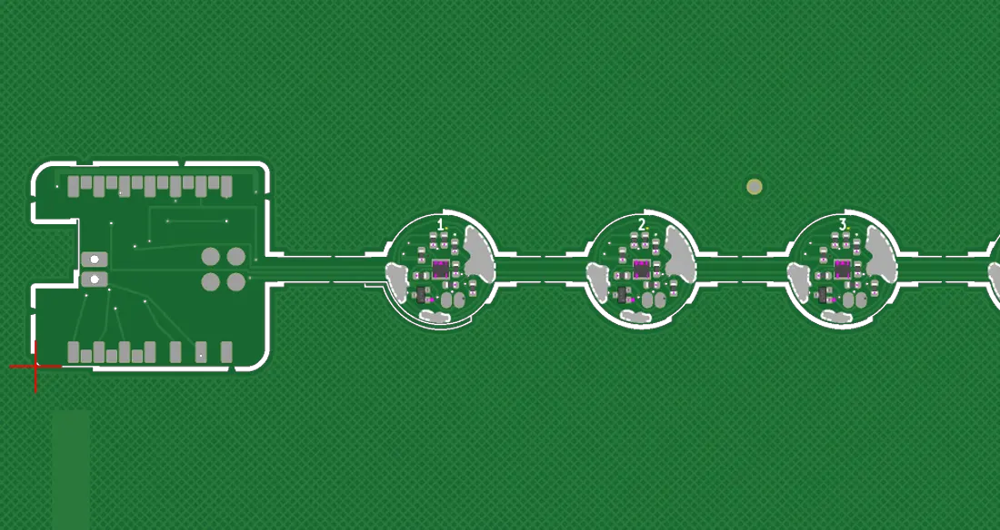

A 3D anatomy of the bracelet: each matte-black bead carries an engraved gold Adinkra symbol, a small circuit board and a haptic motor; the gold core hub holds the battery, microphone and speaker.
Tap a bead
sends a pulse
Beyond the circle
It does more than you’d think.
Every bead is a button. Press one, your phone runs a shortcut.
Building in public
Not a render.
Watch it become real.
The first bracelets are on the bench right now. These are the receipts.



Questions
When can I get one?
We’re hand-building the first units now. Join the waitlist and you’ll be first to hear ship dates — before any public announcement.
How much will it cost?
Founding-circle pricing is being finalized. Circle members lock it in first, ahead of the public price.
Do my friends need to buy one too?
No. You buy one bracelet and invite people from the app — they can light and speak to your beads from their phone before they ever own hardware. When they get a bracelet, it becomes two-way.
Is it a smartwatch or fitness tracker?
No. M’AKOMA is jewelry first — no screens, no feeds, no step counts, no notifications. Just the few people you choose, with you all the time.